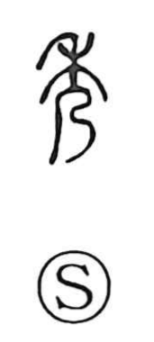

秀

Kun: hiideru | On: shuu
to excel ・ excellent ・ outstanding
Explanation
This character began as a pictograph of a grain stalk (禾) at the moment of full bloom: the upper blossoms open and the pistil hangs down, capturing the plant at its most beautiful, distinguished stage. It belongs to a graphic lineage with 穆, which shows the stage after flowering when the head swells with ripening grain (the 白 element rendering the bursting crop), and 禿, which depicts the bald stalk after the seeds have fallen. By naming that peak, flowering moment, 秀 came to signify what stands out as superior and, by extension, the act of excelling and a person of outstanding talent, as in the term 秀才.